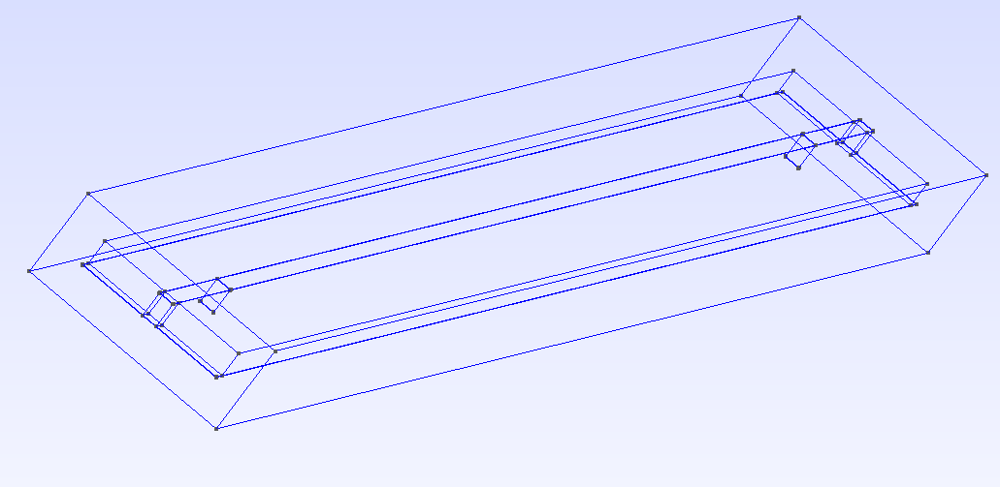
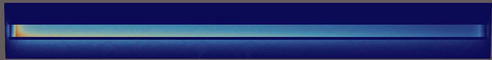
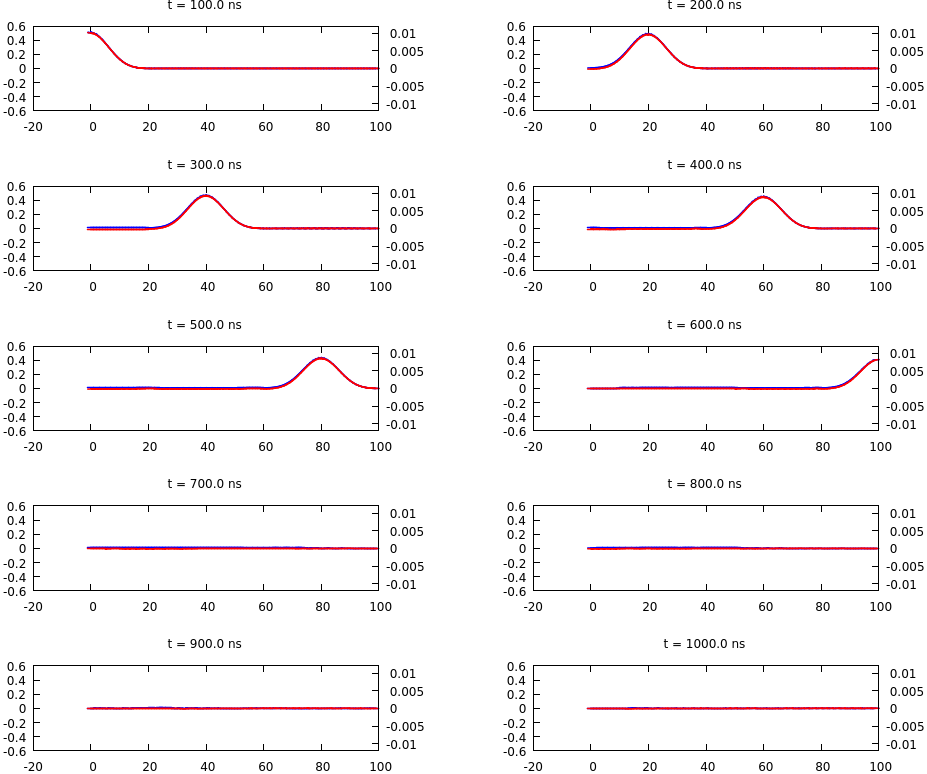
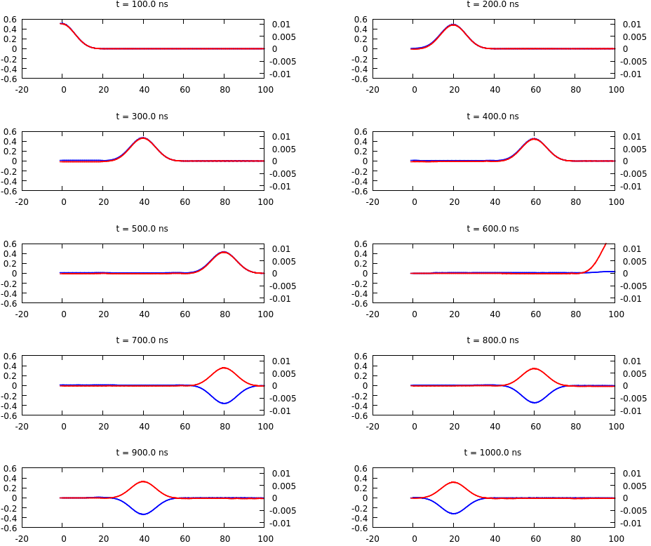
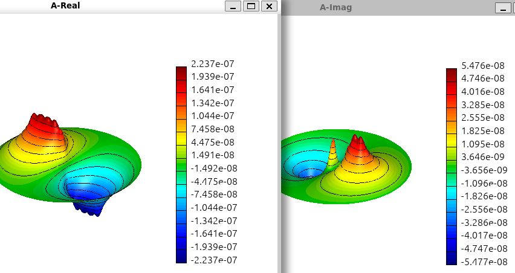
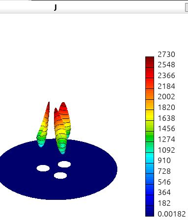

My goal here was to learn about finite element method, so I decide to model some electromagnetic effects. So the results may not be fully reliable
I use the MFEM finite element library to explore electromagnetic fields and signal propagation. My projects cover three-dimensional PCB trace simulations, transmission line models, and skin and proximity effects in conductors. The source code and technical documents are available on GitHub.
My PCB simulation project models transient electromagnetic propagation along a trace, including its conducting ground plane, dielectric, surrounding air, voltage source, and resistive load. PCB geometry are created and meshed with GMSH python scripts. The fully coupled solver advances the electric field and magnetic flux density together using MFEM, MPI, and hypre, with backward Euler or Crank–Nicolson time stepping.
The documented examples explore signal reflections caused by openings in the ground plane and show fields and current distributions around bends and U-shaped traces. The program records input and output voltages and exports fields for visualization in ParaView.


Source code · Technical document (PDF) · LaTeX source
I developed finite element models of the telegrapher's equations to follow voltage and current along a transmission line. The formulation includes distributed resistance, inductance, capacitance, and conductance, together with source and load resistances. My LaTeX notes derive the weak formulation and matrix equations and describe time stepping with MFEM's backward Euler solver.
Examples use a 100 m RG-58 cable with step, pulse, and sinusoidal signals to study propagation, attenuation, and reflections with different load terminations.


My two-dimensional conductor models compute skin and proximity effects, DC and AC resistance, and inductance. The project includes a round-wire skin-effect model and a model for one or more groups of wires. A mesh generator supports round, AWG-sized, and rectangular conductors, with specified positions and current phases. Examples visualize magnetic fields and current density, including a three-phase wire arrangement.

